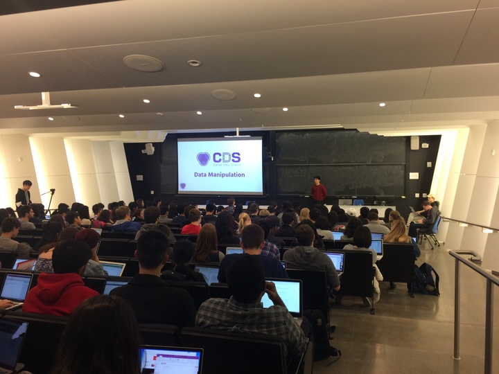

INFO 1998: Introduction to Machine Learning for Python
Gates G01 · 5 - 6 PM Wednesdays
First Lecture on February 14th

Office Hour Schedule
| Ann Zhang | Ryan Kannanaikal | Ethan Cohen | |
|---|---|---|---|
| Day | Tuesday | Friday | Sunday |
| Time | 3 PM - 4 PM | 3 PM - 4 PM | 11 AM - 12 PM |
| Location | Rhodes 402 | Gates G19 | Rhodes 408 |
Spring 2018 Schedule
| Date | Lecture Title | Lecture Slides | Lecture Notes | Assignment |
|---|---|---|---|---|
| 02/07/18 | - | - | LECTURE 0: SETUP | - |
| 02/14/18 | Lecture 1: Introduction and Data Manipulation |  |
LECTURE 1: NUMPY LECTURE 1: PANDAS | Take Home Quiz |
| 02/21/18 | Lecture 2: Manipulation Techniques and Visualization |  |
LECTURE 2: DEMO LECTURE 2: VISUAL LECTURE 2: DATASET |
Project A |
| 02/28/18 | Lecture 3: Introduction to Machine Learning |  |
LECTURE 3: SUPER | Project A |
| 03/07/18 | Lecture 4: Introduction to Classification |  |
LECTURE 4: CLASS LECTURE 4: DEMO LECTURE 4: DATASET |
Project B |
| 03/14/18 | Lecture 5: SVM |  |
LECTURE 5: SVM LECTURE 5: DEMO |
Project B |
| 03/21/18 | Lecture 6: Logistic Regression and Decision Trees |  |
LECTURE 6: LOGIT LECTURE 6: DEMO |
Project C |
| 03/28/18 | Lecture 7: Unsupervised Learning |  |
LECTURE 7: UNSUP LECTURE 7: DEMO |
Project C |
| 04/11/18 | Lecture 8: Model Optimization |  |
LECTURE 8: MODEL | Final Project |
| 04/18/18 | Lecture 9: Cross Validation & Ensemble Learning |  |
LECTURE 9: ENSEM LECTURE 9: BAG |
Final Project |